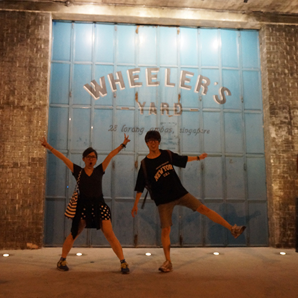
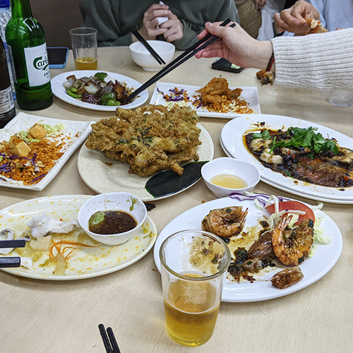
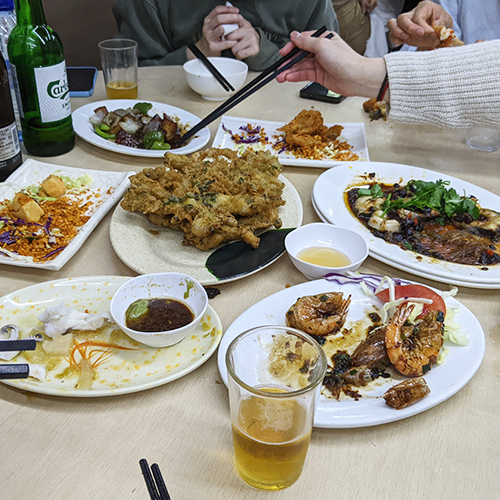
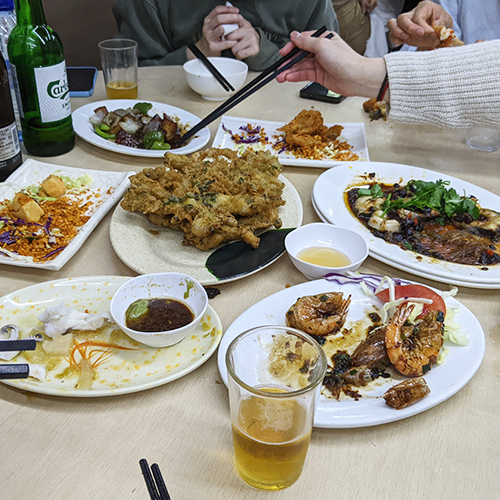
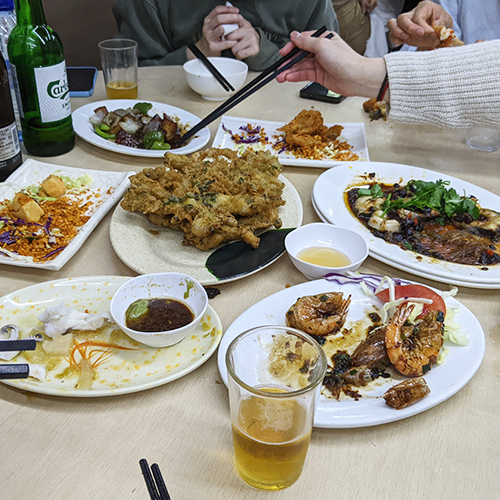

Miscellaneous


 


Seoul National University HospitalMar. 2025 -
Researcher, Bioinformatics Lab (PI: Kwangsu Kim)
Medical AI Co LtdApr. 2021 - Mar. 2025
Senior Research Scientiest, Data Science Team
- Investigated domain generalization and noisy label in medical data.
- Developed an automated machine learning system.
- Developed ECG-based cardiovascular disease sceening products.
VUNO IncAug. 2017 - Apr. 2021
Research Scientiest, Biosignal Team
- Investigated generalization of training deep neural networks for ECG and EHR.
- Developed and evaluated machine learning models for real-world medical data.
Seoul National UniversitySep. 2015 - Aug. 2017
M.S. in Bioengineering (Advisor: Jung Chan Lee)
Pusan National UniversityMar. 2011 - Aug. 2015
B.S. in Mechanical Engineering (Minor in Electrical Engineering)
Magna Cum Laude
Most recent publications on Google Scholar.
* indicates equal contribution.
{{ paper.title }}
{{ paper.authors }}
{{ paper.venue }}
{{ paper.title }}
{{ paper.authors }}
{{ paper.venue }} ({{ paper.year }})
{{ paper.title }}
{{ paper.authors }}
{{ paper.venue }}
